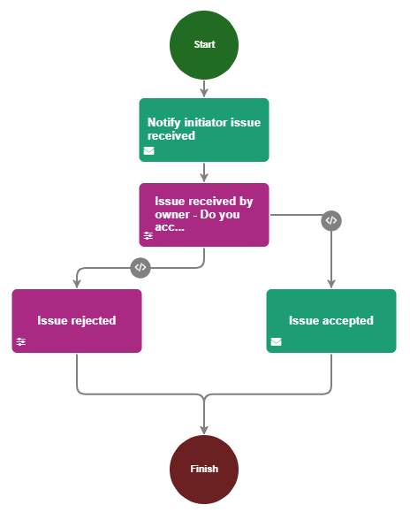
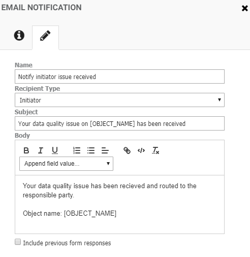
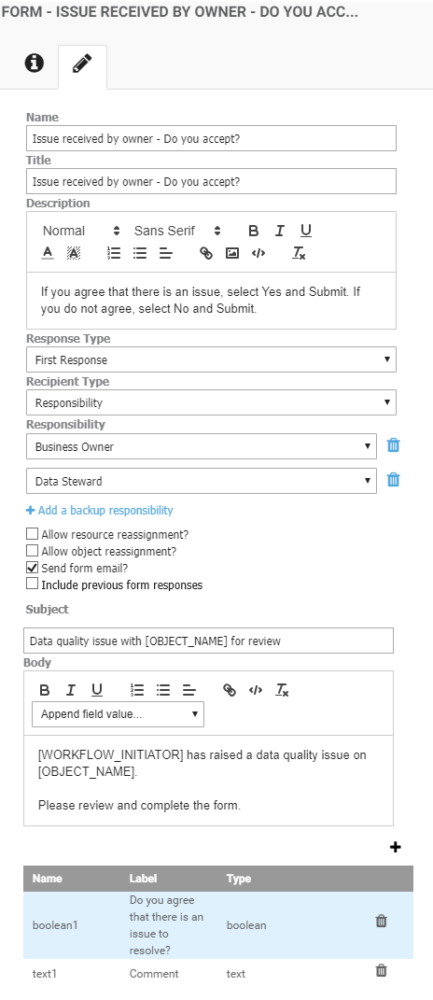
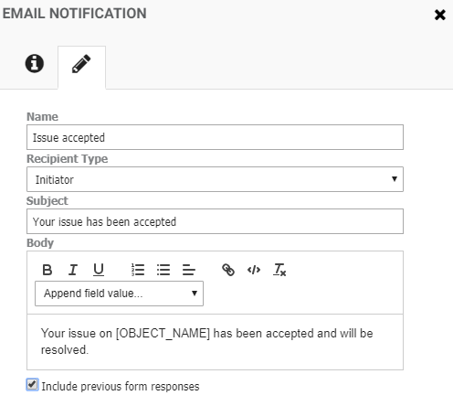
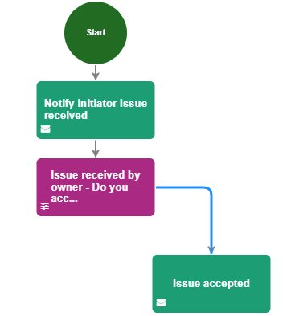
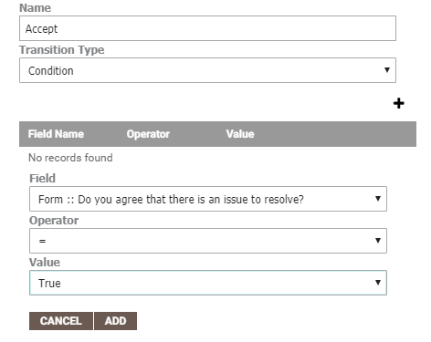
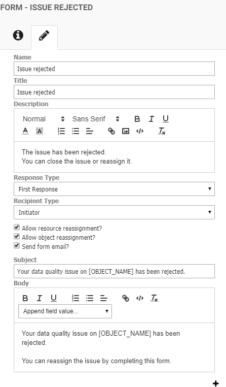
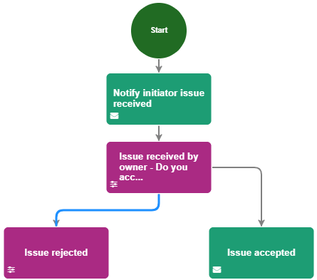
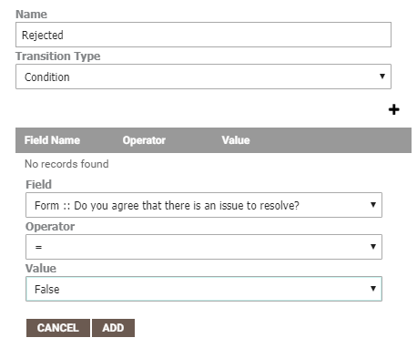

|
|
Creating an action type workflow
Tip: For an introduction to workflows and Action Types, see Establishing workflows and Defining Action Types.
Action Types and workflows are closely related. Generally, once you have defined an Action Type, the next step is to build a workflow around it. This topic walks through an example of creating a workflow that is associated with a data quality Action Type.
- You have created the Action Type on which you want to base the workflow, see Defining Action Types.
- Navigate to the Workflow page by clicking the Administration icon on the left of the screen and selecting Workflow > Workflow.
- Click the Add icon in the top right corner of the Workflow Types panel to create a new workflow.
- In the New Workflow Type panel, type a Name for the workflow, for example "Data quality workflow".
- From the Change Type list, select Item Added. You should always select Item Added when you are creating a workflow around an Action Type.
- From the Object Type list, select the action type to which you want to relate the workflow. For example, if you want the workflow to be triggered when a user raises a data quality issue, select your data quality Action Type, e.g. Action Type::Report Data Quality Issue.
- When you are creating a workflow around an Action Type object, you have the option to also specify an Issue Object Type to limit the instances in which the workflow is triggered. For example, you may only want the workflow to be initiated if a user raises a data quality issue on an application. In this case, you would select Artifact Type:: Application from the Issue Object Type list.
If you do not specify an Issue Object Type, the workflow applies to all assets in the system.
Tip: By using the Issue Object Type field, you can create different workflows for different assets. For example, if there is a data quality issue reported on an application, then you may want to notify certain people and take a set of steps, however when the same action is reported on a business term, you may want to take different steps and notify different people.
- Click Next.
- Build your workflow by dragging the required activities from the left of the screen into the workflow editing area. To connect the workflow activities, click and drag from a point on one activity to connect it to a point on the next. If you need to go back and delete a connection, select the connection that you want to remove, then press the Delete key.
In this example, we will build the following Action Type workflow:

Step Workflow activity Description 1 Start Marks the entry into the workflow. 2 Email Notification Sends an email to the user who raised the issue to notify them that the issue has been received.
Select the Email Notification activity, then click the Edit tab and configure the properties, for example:

3 Form Notifies the receiver of a new issue. The receiver completes the form to approve or reject the issue.
Select the Form activity, then click the Edit tab and configure the properties, for example:

Tip: In this example, the option Send form email? is selected. If this option was not selected, the receiver would see the issue listed in the Your Assignments panel in the application, but they would not otherwise be notified.
For more information on the Form activity, see Creating a form.
4 Email Notification
-
Conditional routing for accepted issues
Sends an email to the initiator to inform them that the issue has been accepted.
Select the Email Notification activity and click the Edit tab to configure this activity to send an email if the issue is accepted, for example:

Tip: In this example, Include previous form responses is selected. This means that the email to the initiator will include a copy of the completed form.
Select the connection between the Form and the "Issue accepted" Email Notification activity:

Click the Edit tab and complete the transition properties to specify that the email should only be sent if the issue is accepted, as follows:

5 Form
-
Conditional routing for rejected issues
Sends a form and an email to the initiator to inform them that the issue has been rejected.
Select the Form activity and click the Edit tab to establish the steps to take when an issue is rejected, for example you can allow the initiator to reassign the issue to a different asset type if the receiver rejects the issue because they feel the issue is not related to the object that they own:

Select the connection between the two Form activities:

Click the Edit tab and complete the transition properties to specify that the email should only be sent if the issue is rejected, as follows:

6 Finish Marks the successful completion of the workflow.